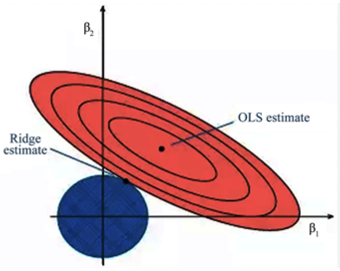

Bayesian Estimation and Frequentist Risk
STA 721: Lecture 9
Duke University
Outline
- Frequentist Risk of Bayes estimators
- Bayes and Penalized Loss Functions
- Generalized Ridge Regression
- Hierarchical Bayes and Other Penalties
Readings:
- Christensen Chapter 2.9 and Chapter 15
- Seber & Lee Chapter 10.7.3 and Chapter 12
Frequentist Risk of Bayes Estimators
Quadratic loss for estimating \(\boldsymbol{\beta}\) using estimator \(\mathbf{a}\) \[ L(\boldsymbol{\beta}, \mathbf{a}) = ( \boldsymbol{\beta}- \mathbf{a})^T(\boldsymbol{\beta}-\mathbf{a})\]
- Consider our expected loss (before we see the data) of taking an ``action’’ \(\mathbf{a}\) (i.e. reporting \(\mathbf{a}\) as the estimate of \(\boldsymbol{\beta}\)) \[ \textsf{E}_{\mathbf{Y}\mid \boldsymbol{\beta}}[L(\boldsymbol{\beta}, \mathbf{a})] = \textsf{E}_{\mathbf{Y}\mid \boldsymbol{\beta}}[( \boldsymbol{\beta}- \mathbf{a})^T(\boldsymbol{\beta}-\mathbf{a})]\] where the expectation is over the data \(\mathbf{Y}\) given the true value of \(\boldsymbol{\beta}\).
Expectation of Quadratic Forms
Theorem: Christensen Thm 1.3.2
Proof
Rearranging we have \[\textsf{E}[\mathbf{W}^T\mathbf{A}\mathbf{W}] = \textsf{E}[(\mathbf{W}- \boldsymbol{\mu})^T\mathbf{A}(\mathbf{W}- \boldsymbol{\mu})] + \boldsymbol{\mu}^T\mathbf{A}\boldsymbol{\mu}\]
Proof: continued
- Use Theorem to Explore Frequentist Risk of using a Bayesian estimator \[\textsf{E}_\mathbf{Y}[( \boldsymbol{\beta}- \mathbf{a})^T(\boldsymbol{\beta}-\mathbf{a})\] compared to the OLS estimator \(\hat{\boldsymbol{\beta}}\).
Steps to Evaluate Frequentist Risk
- MSE: \(\textsf{E}_\mathbf{Y}[( \boldsymbol{\beta}- \mathbf{a})^T(\boldsymbol{\beta}-\mathbf{a}) = \textsf{tr}(\boldsymbol{\Sigma}_\mathbf{a}) + (\boldsymbol{\beta}- \textsf{E}_{\mathbf{Y}\mid \boldsymbol{\beta}}[\mathbf{a}])^T(\boldsymbol{\beta}- \textsf{E}_{\mathbf{Y}\mid \boldsymbol{\beta}}[\mathbf{a}])\)
- Bias of \(\mathbf{a}\): \(\textsf{E}_{\mathbf{Y}\mid \boldsymbol{\beta}}[\mathbf{a}- \boldsymbol{\beta}] = \textsf{E}_{\mathbf{Y}\mid \boldsymbol{\beta}}[\mathbf{a}] - \boldsymbol{\beta}\)
- Covariance of \(\mathbf{a}\): \(\textsf{Cov}_{\mathbf{Y}\mid \boldsymbol{\beta}}[\mathbf{a}- \textsf{E}[\mathbf{a}]\)
- Multivariate analog of MSE = Bias\(^2\) + Variance in the univariate case
Mean Square Error of OLS Estimator
MSE of OLS \(\textsf{E}_\mathbf{Y}[( \boldsymbol{\beta}- \hat{\boldsymbol{\beta}})^T(\boldsymbol{\beta}-\hat{\boldsymbol{\beta}})\)
OLS is unbiased os mean of \(\boldsymbol{\beta}- \hat{\boldsymbol{\beta}}\) is \(\mathbf{0}_p\)
covariance is \(\textsf{Cov}[\boldsymbol{\beta}- \hat{\boldsymbol{\beta}}] = \sigma^2 (\mathbf{X}^T\mathbf{X})^{-1}\) \[\begin{eqnarray*} \textsf{MSE}(\boldsymbol{\beta}) \equiv \textsf{E}_\mathbf{Y}[( \boldsymbol{\beta}- \hat{\boldsymbol{\beta}})^T(\boldsymbol{\beta}-\hat{\boldsymbol{\beta}}) & = &\sigma^2 \textsf{tr}[(\mathbf{X}^T\mathbf{X})^{-1}] \\ & = & \sigma^2 \textsf{tr}\mathbf{U}\Lambda^{-1} \mathbf{U}^T \\ & = & \sigma^2 \sum_{j=1}^p \lambda_j^{-1} \end{eqnarray*}\] where \(\lambda_j\) are eigenvalues of \(\mathbf{X}^T\mathbf{X}\).
If smallest \(\lambda_j \to 0\) then MSE \(\to \infty\)
Mean Square Error using the \(g\)-prior
posterior mean is \(\hat{\boldsymbol{\beta}}_g = \frac{g}{1+g} \hat{\boldsymbol{\beta}}\) (minimizes Bayes risk under squared error loss)
bias of \(\hat{\boldsymbol{\beta}}_g\): \[\begin{align*} \textsf{E}_{\mathbf{Y}\mid \boldsymbol{\beta}}[\boldsymbol{\beta}- \hat{\boldsymbol{\beta}}_g] & = \boldsymbol{\beta}\left(1 - \frac{g}{1+g}\right) = \frac{1}{1+g} \boldsymbol{\beta} \end{align*}\]
covariance of \(\hat{\boldsymbol{\beta}}_g\): \(\textsf{Cov}(\hat{\boldsymbol{\beta}}_g) = \frac{g^2}{(1+g)^2} \sigma^2 (\mathbf{X}^T\mathbf{X})^{-1}\)
MSE of \(\hat{\boldsymbol{\beta}}_g\): \[\begin{align*} \textsf{MSE}(\boldsymbol{\beta}) = \frac{g^2}{(1+g)^2} \sigma^2 \textsf{tr}(\mathbf{X}^T\mathbf{X})^{-1} + \frac{1}{(1+g)^2} \|\boldsymbol{\beta}\|^2 \\ = \frac{1}{(1+g)^2} \left( g^2 \sigma^2 \sum_{j=1}^p\lambda_j^{-1} + \|\boldsymbol{\beta}\|^2 \right) \end{align*}\]
Can Bayes Estimators have smaller MSE than OLS?
MSE of OLS is \(\textsf{E}_\mathbf{Y}[( \boldsymbol{\beta}- \hat{\boldsymbol{\beta}})^T(\boldsymbol{\beta}-\hat{\boldsymbol{\beta}}) = \sigma^2 \textsf{tr}[(\mathbf{X}^T\mathbf{X})^{-1}]\) (OLS has minimum MSE under squared error loss out of all unbiased estimators)
MSE of \(g\)-prior estimator is
\[\textsf{MSE}_g(\boldsymbol{\beta}) = \frac{1}{(1+g)^2} \left( g^2 \sigma^2 \textsf{tr}[(\mathbf{X}^T\mathbf{X})^{-1}] + \|\boldsymbol{\beta}\|^2 \right)\]for fixed \(\boldsymbol{\beta}\), what values of \(g\) is the MSE of \(\hat{\boldsymbol{\beta}}_g\) lower than that of \(\hat{\boldsymbol{\beta}}\)?
for fixed \(g\), what values of \(\boldsymbol{\beta}\) is the MSE of \(\hat{\boldsymbol{\beta}}_g\) lower than that of \(\hat{\boldsymbol{\beta}}\)?
is there a value of \(g\) that minimizes the MSE of \(\hat{\boldsymbol{\beta}}_g\)?
what is the MSE of \(\hat{\boldsymbol{\beta}}_g\) under the “optimal” \(g\)?
is the MSE of \(\hat{\boldsymbol{\beta}}_g\) using the “optimal” \(g\) always lower than that of \(\hat{\boldsymbol{\beta}}\)?
Mean Square Error under Ridge Priors
MSE with OLS and \(g\)-prior estimators depend on the eigenvalues of \(\mathbf{X}^T\mathbf{X}\) and can be infinite if the smallest eigenvalue is zero.
Ridge regression estimator \(\hat{\boldsymbol{\beta}}_\kappa = (\mathbf{X}^T\mathbf{X}+ \kappa \mathbf{I}_p)^{-1} \mathbf{X}^T\mathbf{Y}\) has finite MSE for all \(\kappa > 0\). (\(k = 0\) is OLS)
MSE of Ridge estimator \(\textsf{E}_{\mathbf{Y}\mid \boldsymbol{\beta}}[( \boldsymbol{\beta}- \hat{\boldsymbol{\beta}}_\kappa)^T(\boldsymbol{\beta}-\hat{\boldsymbol{\beta}}_\kappa) = \textsf{E}[(\boldsymbol{\alpha}- \mathbf{a})^T(\boldsymbol{\alpha}- \mathbf{a})]\)
bias of \(a_j = \frac{\lambda_j}{\lambda_j + \kappa} \hat{\alpha}_j\) is \(\frac{\kappa}{\lambda_j + \kappa} {\alpha}_j\)
variance \(a_j = \sigma^2 \frac{\lambda_j^2}{(\lambda_j + \kappa)^2}\) \[\textsf{MSE}_R = \sigma^2 \sum_{j=1}^p \frac{\lambda_j^2}{(\lambda_j + \kappa)^2} + \sum_{j=1}^p \frac{\kappa^2}{(\lambda_j + \kappa)^2} \alpha_j^2\]
can show that the deriviate of the \(\textsf{MSE}_R\) with respect to \(\kappa\) is negative at \(k = 0\) so that there exists a \(\kappa\) so the MSE of the Ridge estimator is always less than that of OLS.
Penalized Regression
Ridge regression is a special case of penalized regression where the penalty is \(\kappa \|\boldsymbol{\beta}\|^2\) for some \(\kappa > 0\). (let \(\kappa^* = \kappa/\phi\))
posterior mode maximizes the posterior density or log posterior density \[\begin{align*} \hat{\boldsymbol{\beta}}_R = \arg \max_{\boldsymbol{\beta}} \cal{L}(\boldsymbol{\beta}) & = \log p(\boldsymbol{\beta}\mid \mathbf{Y}) \propto \log p(\mathbf{Y}\mid \boldsymbol{\beta}) + \log p(\boldsymbol{\beta}) \\ & = -\frac{\phi}{2} \|\mathbf{Y}- \mathbf{X}\boldsymbol{\beta}\|^2 - \frac{\kappa}{2} \|\boldsymbol{\beta}\|^2 \\ & = -\frac{\phi}{2} \left( \|\mathbf{Y}- \mathbf{X}\boldsymbol{\beta}\|^2 + \kappa^* \|\boldsymbol{\beta}\|^2 \right) \end{align*}\]
maximizing the posterior mode is equivalent to minimizing the penalized loss function \[\begin{align*} \hat{\boldsymbol{\beta}}_R & = \arg \max_{\boldsymbol{\beta}} -\left(\|\mathbf{Y}- \mathbf{X}\boldsymbol{\beta}\|^2 + \kappa^* \|\boldsymbol{\beta}\|^2 \right) \\ & = \arg \min_{\boldsymbol{\beta}} \left(\|\mathbf{Y}- \mathbf{X}\boldsymbol{\beta}\|^2 + \kappa^* \|\boldsymbol{\beta}\|^2 \right) \end{align*}\]
Scaling and Centering
Note: usually use Ridge regression after centering and scaling the columns of \(\mathbf{X}\) so that the penalty is the same for all variables. \(\mathbf{Y}_c = (\mathbf{I}- \mathbf{P}_1) \mathbf{Y}\) and \(X_c\) the centered and standardized \(\mathbf{X}\) matrix
alternatively as a prior, we are assuming that the \(\boldsymbol{\beta}_j\) are iid \(\textsf{N}(0, 1/\kappa^*)\) so that the prior for \(\boldsymbol{\beta}\) is \(\textsf{N}(\mathbf{0}_p, \mathbf{I}_p/\kappa^* )\)
if the units/scales of the variables are different, then the variance or penality should be different for each variable.
standardizing the \(\mathbf{X}\) so that \(\mathbf{X}_c^T\mathbf{X}_c\) is a constant times the correlation matrix of \(\mathbf{X}\) ensures that all \(\boldsymbol{\beta}\)’s have the same scale
centering the data forces the intercept to be 0 (so no shrinkage or penality)
Alternative Motivation
If \(\hat{\boldsymbol{\beta}}\) is unconstrained expect high variance with nearly singular \(\mathbf{X}_c\)
Control how large coefficients may grow \[\arg \min_{\boldsymbol{\beta}} (\mathbf{Y}_c - \mathbf{X}_c \boldsymbol{\beta})^T (\mathbf{Y}_c - \mathbf{X}_c\boldsymbol{\beta})\] subject to \[ \sum \beta_j^2 \le t\]
Equivalent Quadratic Programming Problem \[\hat{\boldsymbol{\beta}}_{R} = \arg \min_{\boldsymbol{\beta}} \| \mathbf{Y}_c - \mathbf{X}_c \boldsymbol{\beta}\|^2 + \kappa^* \|\boldsymbol{\beta}\|^2\]
different approaches to selecting \(\kappa^*\) from frequentist ane Bayesian perspectives
Plot of Constrained Problem
Generalized Ridge Regression
rather than a common penalty for all variables, consider a different penalty for each variable
as a prior, we are assuming that the \(\boldsymbol{\beta}_j\) are iid \(\textsf{N}(0, \frac{\kappa_j}{\phi})\) so that the prior for \(\boldsymbol{\beta}\) is \(\textsf{N}(\mathbf{0}_p, \phi^{-1} \mathbf{K}^{-1})\) where \(\mathbf{K}= \textsf{diag}(\kappa_1, \ldots, \kappa_p)\)
hard enough to choose a single penalty, how to choose \(p\) penalties?
place independent priors on each of the \(\kappa_j\)’s
a hierarchical Bayes model
if we can integrate out the \(\kappa_j\)’s we have a new prior for \(\beta_j\)
this leads to a new penalty!
examples include the Lasso (Double Exponential Prior) and Double Pareto Priors